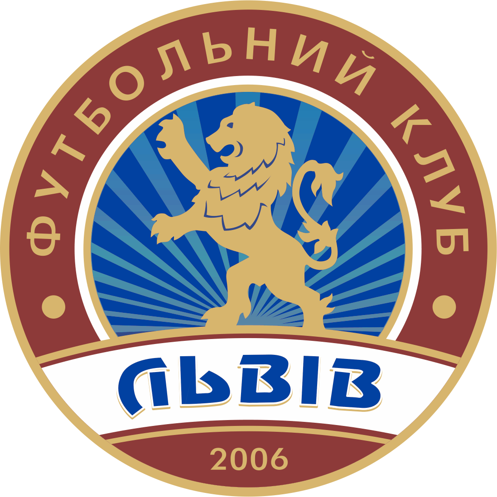
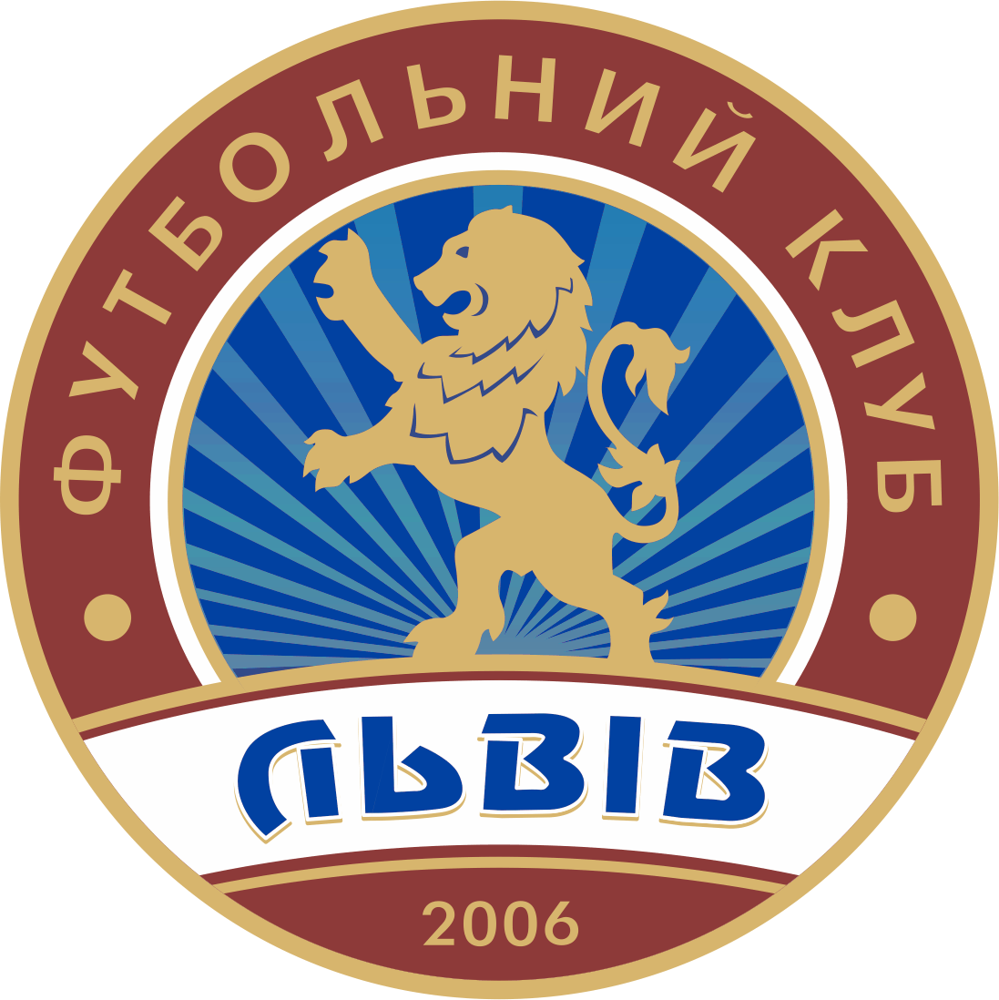
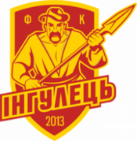

Наш список розпочинають 3 команди:ФК Львів,Металіст,Інгулець.
1.ФК Львів
Засновано 2006,2016
Розформовано 2012, 2023
Клуб заявився на Чемпіонат України серед аматорів і брав участь у Кубку України серед аматорів. Наступного року команда офіційно отримала професійний статус і заявилася до Другої ліги.
Влітку 2018 «Львів» став учасником Прем'єр-ліги, замінивши рівненський «Верес».
За результатами сезону 2022/23 посів останнє 16-те місце в УПЛ і припинив участь у професійних змаганнях, не заявившись на наступний сезон до Першої ліги.
 

Емблеми ФК Львів
2.Металіст
«Металіст» — український футбольний клуб з міста Харків, заснований 2019 року під назвою «Метал».
Переможець другої ліги 2020/21.
У сезоні 2022/23 посів 15 місце в українській Прем'єр-лізі, вибувши до першої ліги.

Емблема Металіст
3.Інгулець
ФК Інгулець — професійний футбольний клуб, який представляє смт Петрове Кіровоградської області.
Заснований 2013 року.
До лютого 2015 року мав назву «Агрофірма П'ятихатська» і базувався в смт Володимирівка Олексадрійського району.
У 2019 році клуб став першим в історії українського футболу, який вийшов у фінал кубка України з другого за рангом дивізіону.
Впродовж трьох сезонів (2020/21, 2021/22 та 2022/2023) виступав в українській Прем'єр-лізі.
Зараз клуб находиться в першій лізі.
Також цікавий факт:клуб мав фарм-клуби,які виступали в 1,2 лізі,але про це розкажу в наступних блогах.

Зліва сучасна емблема Інгульця,а з права емблема 2015-2017

Емблема Інгульця до 2015